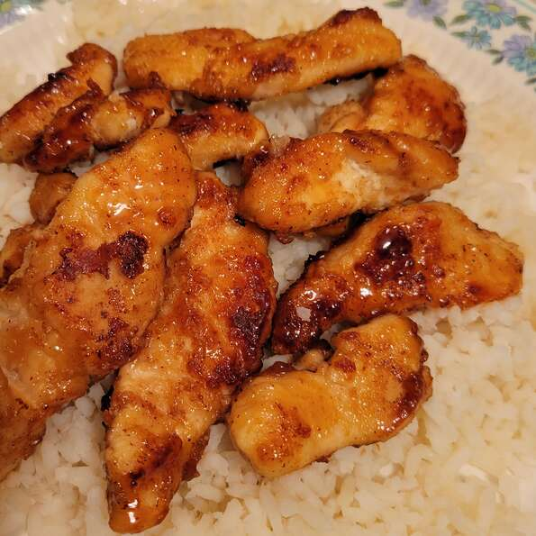

So why are we here?
Do you like chicken? Do you like Lime? Do you like honey? Then you'll love this recipe because it's got all 3!!! :D
Insert story about how my mama made this recipe back in the day
Keep goin with the story, no recipe yet
We'll get there some day
Ingredients
- 1/3 cup all purpose flour
- 1/4 teaspoon cayenne pepper
- 10 ounces boneless, skinless chicken breast, cut into strips
- 1 tablespoon butter
- 2 tablespoons lime juice
- 2 tablespoons honey
- 1 tablespoon brown sugar
- 1 reaspoon Worcestershire sauce
Steps
- Combine flour and cayenne pepper in a large resealable plastic bag. Add a few chicken strips at a time and shake to coat.
- Melt butter in a large, nonstick skillet over medium heat. Add chicken and cook until browned on all sides, 4 to 6 minutes.
- Combine lime juice, honey, brown sugar, and Worcestershire sauce in a bowl; pour over the chicken. Continue to cook until juices run clear and the sauce is thickened, 3 to 5 more minutes.
Return to top
Return to home page